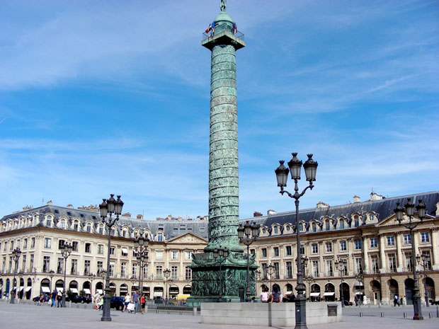

Paris is known for its many elegant parks, but the city boasts a large number of very diverse parks. While some date back to the 17th century, many modern parks have been created in the last couple of decades. Even though Paris has a dense urban structure, the city boasts more than 400 parks.
The Paris squares or places that we want to peak at are those that are more secluded - somewhat like a park in miniature. These will be the locations that can give you respite from a busy day. As you restore your spirit, enjoy the French architecture around the squares, the beautiful plants and the peaceful quiet.

Place Vendôme (French pronunciation: [plas vɑ̃dom]) is a square in the 1st arrondissement of Paris, France, located to the north of the Tuileries Gardens and east of the Église de la Madeleine. It is the starting point of the Rue de la Paix. Its regular architecture by Jules Hardouin-Mansart and pedimented screens canted across the corners give the rectangular Place Vendôme the aspect of an octagon. The original Vendôme Column at the center of the square was erected by Napoleon I to commemorate the battle of Austerlitz; it was torn down on 16 May 1871, by decree of the Paris Commune, but subsequently re-erected and remains a prominent feature on the square today.
At the centre of the square's long sides, Hardouin-Mansart's range of Corinthian pilasters breaks forward under a pediment, to create palace-like fronts. The arcading of the formally rusticated ground floors does not provide an arcaded passageway as at Place des Vosges. The architectural linking of the windows from one floor to the next, and the increasing arch of their windowheads, provide an upward spring to the horizontals formed by ranks of windows. Originally the square was accessible by a single street and preserved an aristocratic quiet, except when the annual fair was held there. Then Napoléon opened the Rue de la Paix, and the 19th century filled the Place Vendôme with traffic. It was only after the opening in 1875 of the Palais Garnier on the other side of the rue de la Paix that the centre of the Parisian fashionable life started gravitating around the rue de la Paix and the Place Vendôme.
The Place Vendôme has been renowned for its fashionable and deluxe hotels such as the Ritz. Many famous dress designers have had their salons in the square. The only remaining one is the shirtmaker Charvet, at number 28, whose store has been on the Place since 1877. Since 1718, the Ministry of Justice, also known as the "Chancellerie", is located at the Hotel de Bourvallais located at numbers 11 and 13. Right on the other side of the Place, number 14 houses the Paris office of JP Morgan, the investment bank.
Place Vendôme was a 1998 movie starring Catherine Deneuve.